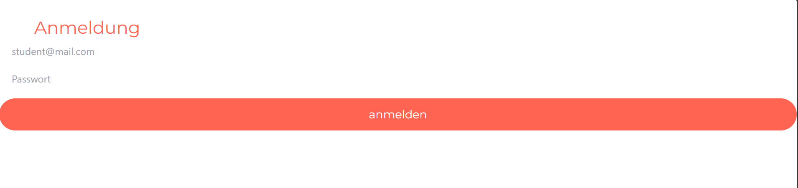
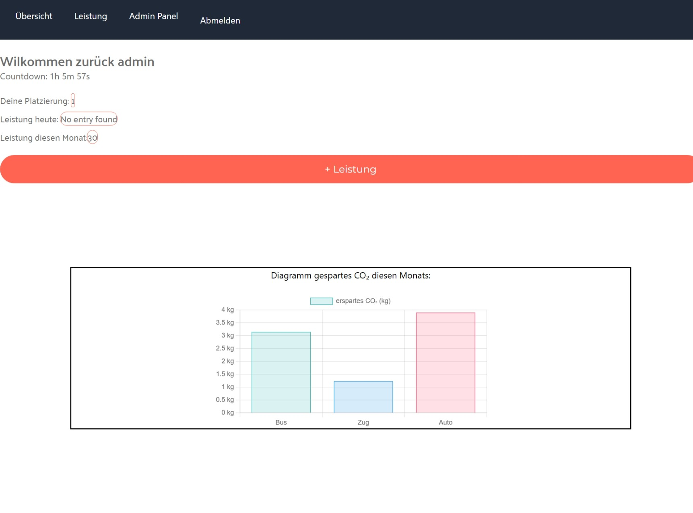
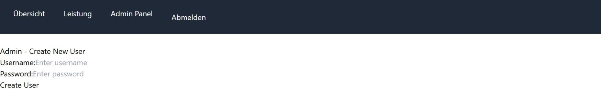

Project Description
The following diagram illustrates the flow between the Login Page, Homepage, Performance Page, and Admin Page:
Authenticate users securely
API validates credentials"] Homepage["Homepage:
Shows performance metrics
Countdown timer active
Dynamic charts shown"] PerformancePage["Performance Page:
Log performance data
Interactive calendar input
Data stored securely"] AdminPanel["Admin Panel:
Intermediary admin
gateway"] AdminPage["Admin Page:
Manage user accounts
Forms create entries
Secure POST used"] LoginPage -->|User Access| Homepage Homepage -->|Navigation| PerformancePage LoginPage -->|Admin Access| AdminPanel AdminPanel -->|Admin Access| AdminPage %% Define blue-themed nodes classDef blueNodes fill:#cce5ff,stroke:#ADD8E6,stroke-width:2px,color:#0000ff; class LoginPage,Homepage,PerformancePage,AdminPanel,AdminPage blueNodes; %% Style all arrows to be thicker and red linkStyle default stroke:#FF4040,stroke-width:3px;
Procedure
Virtualization: Used VirtualBox to create a Virtual Machine, configured with a bridged adapter to enable local network hosting during development.
Version Control: Managed code across multiple branches using GitHub for efficient collaboration and tracking.
Deployment Environments: Implemented the application in both Windows and Linux (Ubuntu Server) environments.
Database Management: Integrated backend database environments, including Microsoft SQL Server and MySQL Server.
Automation: Utilized BAT scripting on Windows and Bash scripting on Linux for automatic table updates.
Branching Strategy: The Windows implementation is maintained on the main branch. The Linux implementation resides on the Linux-server branch.
Result
The following pages demonstrate the core functionality of the PerformanceTracker application, including user authentication, performance tracking, and administrative tools.
Login Page
The login page handles user authentication and redirects successful logins to the homepage. The app sends API requests to the backend for validation.

const Login = ({ setUsername, username, returnData2 }) => {
const [password, setPassword] = useState('');
const [errorMessage, setErrorMessage] = useState(''); // State for error message
const navigate = useNavigate();
useEffect(() => {
console.log('Username:', username);
console.log('Password:', password);
}, [username, password]);
const handleUsernameChange = (e) => { setUsername(e.target.value); };
const handlePasswordChange = (e) => { setPassword(e.target.value); };
const handleSubmit = () => {
const loginResult = login2(returnData2, username, password);
console.log(loginResult);
console.log('Form submitted');
if (loginResult.success) {
console.log('try open page');
setUsername(username);
navigate('/homepage');
} else {
setErrorMessage(loginResult.message); // Set error message if login fails
}
};
};
Homepage
The homepage dynamically presents user-specific performance metrics, including daily, monthly, and total mileage, retrieved from the server. Additionally, the Navbar, along with the locally stored username, ensures seamless navigation.

const Homepage = ({ username, DailyMileage, MonthlyMileage, TotalMileage, returnData2 }) => {
const [Username, setUsername] = useState(localStorage.getItem('username') || '');
useEffect(() => {
if (username) {
setUsername(username);
localStorage.setItem('username', username);
}
}, [username]);
const navigate = useNavigate();
const handleAddPerformance = () => {
navigate('/homepage/performance');
};
};
Performance Page
The Performance page enables users to record their performance data for a specific date through an intuitively designed CSS-powered day-picker.

const Performance = ({ username, returnData2 }) => {
const [Username, setUsername] = useState(localStorage.getItem('username') || '');
useEffect(() => {
if (username) {
console.log("ReturnData2", returnData2);
setUsername(username);
localStorage.setItem('username', username);
}
}, [username]);
const defaultClassNames = getDefaultClassNames();
const [selected, setSelected] = useState(new Date());
const handleDayClick = () => {};
const css = `
.my-today {
font-weight: bold;
}
.my-selected {
border: 1px solid #Ff4040;
border-width: 2px;
}
.my-nav-button {
color: #Ff4040;
}
.my-footer {
font-weight: bold;
margin-top: 10px;
padding: 10px;
color: #Ff4040;
}`;
};
Admin Page
The Admin Page provides the admin with the option to add users into the database using a simple input field. The app sends API POST requests to the backend.

const AdminPage = () => {
const [username, setUsername] = useState('');
const [password, setPassword] = useState('');
const [successMessage, setSuccessMessage] = useState(''); // State for success message
const handleUsernameChange = (e) => { setUsername(e.target.value); };
const handlePasswordChange = (e) => { setPassword(e.target.value); };
const handleCreateUser = async () => {
if (!username || !password) {
setSuccessMessage('Please fill in both fields');
return;
}
try {
const response = await fetch('http://IP-Address/students', {
method: 'POST',
headers: {
'Content-Type': 'application/json',
},
body: JSON.stringify({ username, password }),
});
const data = await response.json();
if (response.ok) {
setSuccessMessage('User created successfully');
setUsername(''); // Clear the username field
setPassword(''); // Clear the password field
} else {
setSuccessMessage(data.error || 'Failed to create user');
}
} catch (error) {
console.error('Error creating user:', error);
setSuccessMessage('An error occurred while creating the user');
}
};
};
Conclusion
The PerformanceTracker application is a comprehensive tool for tracking and managing user performance metrics. It provides a user-friendly interface, secure authentication, and robust data management capabilities.
By utilizing modern web technologies and best practices, the application ensures a seamless user experience while maintaining data integrity and security.